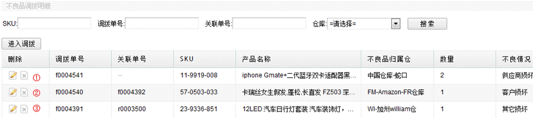
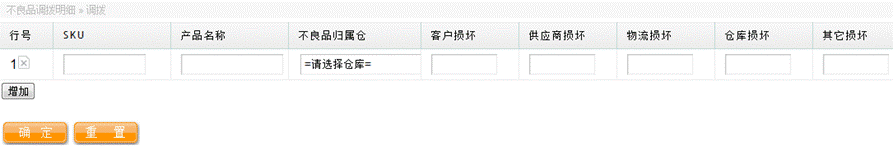

不良品调拨明细表，列出了系统所有的不良品调拨记录，其中包括①手动做的调拨、②转仓入库做的调拨、③退货入库做的调拨，如下图： 
点击按钮“进入调拨”可以手动进行不良品调拨，填写SKU，选择不良品归属仓，在损坏情况下填写数量，如下图。 
关联单号指使该不良品记录产生的上一级单号，由此可见手动做的调拨，不存在关联单号，如一图①标记订单；②标记订单是由转仓入库的时候，填写了损坏数量产生，所以会关联到一个转仓单；③标记订单是由退货入库时产生，所以关联到退货单号。